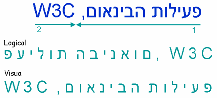
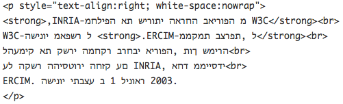

文本的视觉顺序与逻辑顺序有什么区别，我应该用哪种？
双向文本在用从右到左的文种书写的文本中很常见，如阿拉伯字母、希伯来字母、叙利亚字母和 它拿字母。许多不同的语言都使用这些文种书写，包括阿拉伯语、希伯来语、普什图语、波斯语、信德语、叙利亚语、迪维希语、乌尔都语、意第绪语等。
在显示双向文本时，任何嵌入的从左到右书写系统的文本和所有数字在上述文种的总体从右到左视觉流中都会在视觉上从左到右排列。（当然，本页的英语文本在包含阿拉伯语和希伯来语示例时也包含双向文本。）
你应该始终使用逻辑顺序创建HTML（以及任何其他类型的标记），绝不要使用视觉顺序。
视觉顺序文本是在不支持Unicode双向文本算法的旧用户代理上表示希伯来语的常见方式，现在已很少见。视觉顺序指字符在源代码中的存储顺序与你在屏幕上看到它们的显示顺序相同。
（视觉顺序在阿拉伯语中不太常见。由于阿拉伯字母都是连在一起的，阿拉伯语实现者有更强的动机来使用逻辑顺序。采用视觉顺序的阿拉伯语文本可能对每个字形的变形使用单独的码位。）
使用逻辑顺序时，文本按照通常的打字顺序（通常也是发音顺序）存储在内存中。浏览器在显示时，用Unicode双向文本算法来正确地显示文本。
下图展示了在顶部的蓝色双向文本 פעילות הבינאום, W3C 在从右到左的段落中正常显示的样子。带编号的箭头显示阅读的方向和顺序。
第二行和第三行（绿色文本）分别显示逻辑编码和视觉编码文本在内存中存储字符的顺序（从左到右显示）。逻辑顺序反映了内容创作者输入文本的顺序。Visual那行也是如此，也就是说你需要反着输入文本（除非你有编辑工具可以自动将逻辑输入重新排列为视觉顺序）。

下面是一个HTML中视觉顺序源代码的例子。

要让视觉顺序正确工作，除了反向书写文本外，你还必须进行禁用任何换行、在段落和表格单元格中明确右对齐文本、添加明确的换行符等操作，并且在从使用从左到右文种的语言翻译时，手动颠倒表格列的顺序。你还要为任何换行到另一行的标记文本增加和维护单独的链接或强调标记。
（这实际上是一个相当简洁的实现。你还会发现这样的东西：右对齐段落，每行周围都有<nobr>..</nobr>标签。如果你的窗口太窄，每行的开头会从浏览器的右侧消失。）
还有一个和维护有关的关键问题。比如，除了反向输入希伯来语的困难之外，如果你想在视觉顺序文本段落的中间添加几个单词，你必须移动段落中后续每一行的文本，以重置换行。你还必须（在更改之前或之后）手动重新排列跨越多行的任何内联标记。
结果是非常脆弱的代码，难以维护。
此外，管理文本所需的所有额外标签不仅会使你的代码膨胀，影响创作时间，还会影响带宽。
视觉顺序还可能在更高的级别上造成问题。例如，在翻译成另一种语言时，我们需要手动颠倒表格列的顺序。如果页面的布局发生变化，换行符也需要手动重新排列。通常，浏览器的搜索对话框以逻辑顺序捕获文本，这会导致搜索键与以视觉顺序存储的文本不匹配，除非浏览器中有特殊逻辑来处理此问题，等等。
另一方面，使用逻辑顺序的文本使创建根据块元素宽度自动换行的长段落变得很简单，也让使用屏幕阅读器等方式处理可访问性变得更加容易。你只需按照朗读顺序输入文本，Unicode双向文本算法就会为你完成所有繁重的工作。
在现代系统中，如果后端存储包含以视觉顺序表示的旧数据（如大型机或iSeries计算机），则需要支持后端（视觉顺序）和前端（逻辑顺序）之间的双向数据流。
除了字符本身的顺序外，这个过程可能涉及各种因素。这种详细程度超出了本文问题的范围，但你可以在IBM Bidi开发实验室的Tomer Mahlin发送的邮件中找到有用的额外信息。
我们始终建议你用UTF-8作为页面的字符编码，它支持字符的逻辑顺序，但如果，且仅当，你选择使用ISO 8859编码时，你需要在声明编码时小心。你可以在HTTP标头或文档内的meta元素中（或两者）声明内容的编码。
关于使用希伯来字母的文本的编码声明有特殊的约定，与视觉vs逻辑顺序问题相关。ISO-8859-8的声明表示文本是视觉编码的。对于使用ISO编码的逻辑顺序内容，你必须将ISO编码的文本标记为ISO-8859-8-i。
相关链接，创作网页